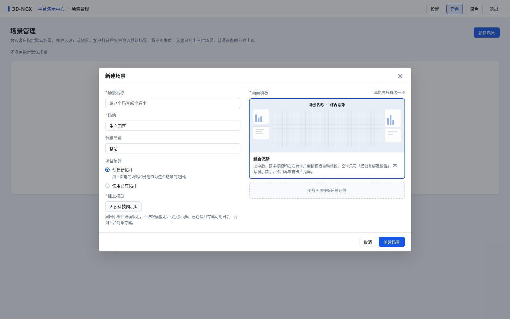
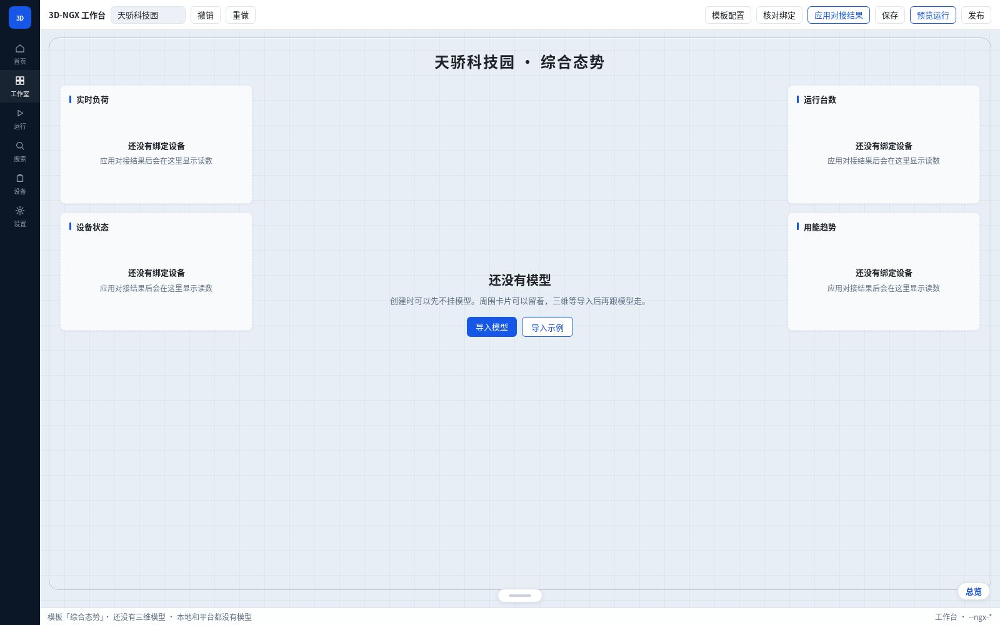
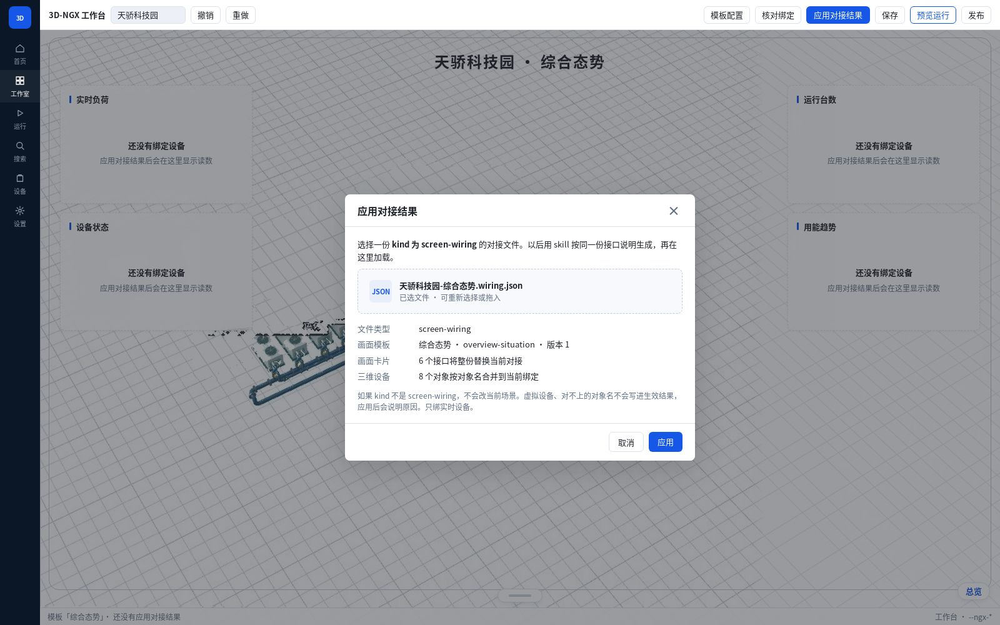
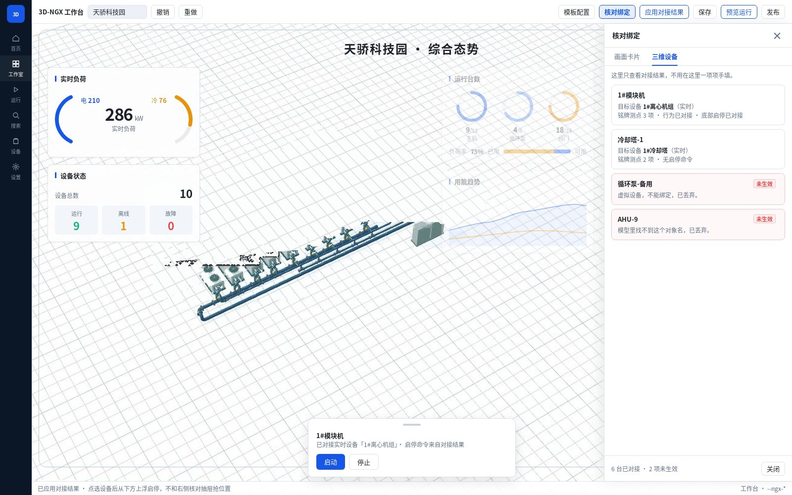
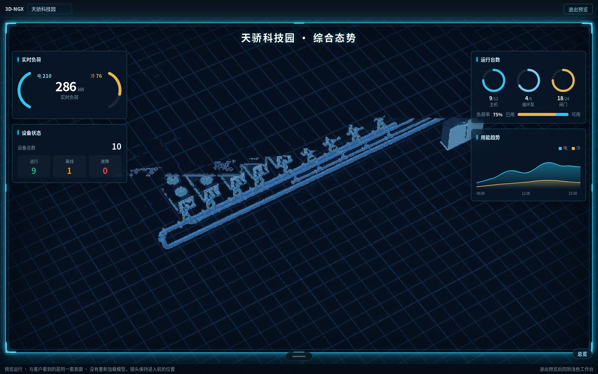
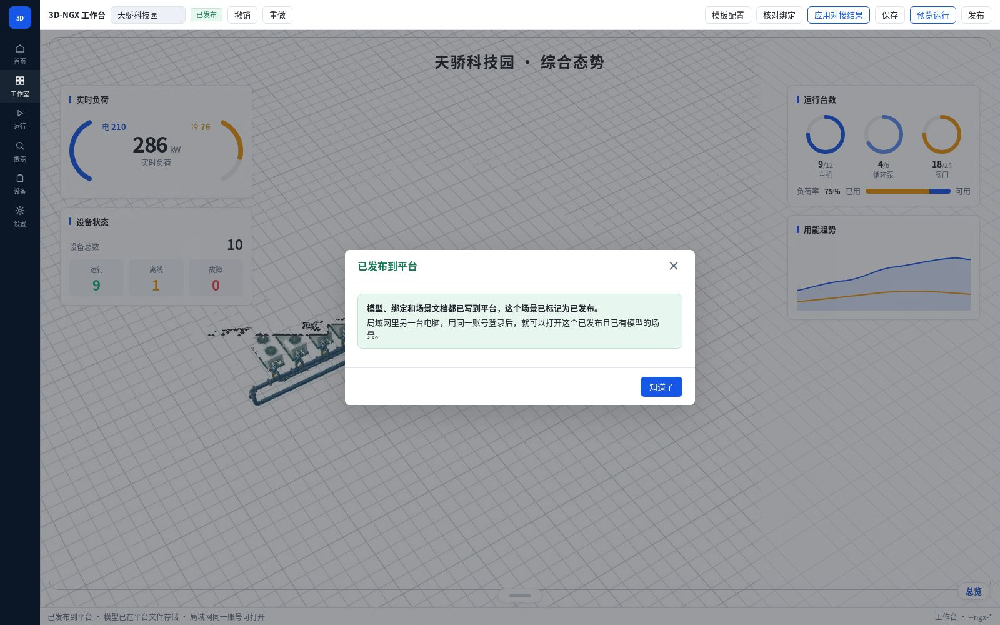

按向导选客户和范围，并必选画面模板「综合态势」。选中后，顶中标题和左右翼卡片按稿图自动就位，不用再拖卡片搭屏。

选模板、挂模型、用代码对接，看过预览再发布到平台。工作台始终是浅色工业风；客户看到的深色外观只出现在「预览运行」和正式运行里。本轮画面模板先只有「综合态势」。
按向导选客户和范围，并必选画面模板「综合态势」。选中后，顶中标题和左右翼卡片按稿图自动就位，不用再拖卡片搭屏。

创建时就可以挂上 GLB；没挂的，进工作台后点「导入模型 / 导入示例」。没有模型时，中间写「还没有模型」，周围卡片可以留着。

按接口说明生成对接文件，在工作台点「应用对接结果」加载。成功进入草稿；虚拟设备、对不上的对象会被丢掉，并说清楚原因。

「核对绑定」只查看结果。模板在线配置可以增删区域、改接口，并保存到当前场景，不会改仓库里的内置模板。

用「预览运行」看客户将看到的深色外观，退出后回到浅色工作台。进入预览不会重新加载模型，也不会把镜头打回默认。

把模型传到平台已有文件存储，把绑定和文档写到平台，并标成已发布。成功提示「已发布到平台」。本地和平台都没有模型时，不能假发布。
